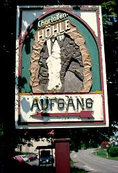

Charlottenhöhle
Charlotte's Cave
Useful Information
|  |
| Image: The sign to Charlottes' cave. |
| Location: | A7 exit Giengen/Herbrechtingen, to Hürben, then towards Lontal, after 1km right hand side. A7 exit Niederstotzingen, 2km after Niederstotzingen, turn left into romantic Lonetal, after the village Lontal turn left towards Hürben, left hand side, just before Hürben. Big parking lot, 10 min walk uphill. (75,Lb57) |
| Open: |
HöhlenHaus:
APR to OCT daily 9-19. NOV to MAR Wed-Sat 14-18, Sun, Hol 10-18, school holidays daily. Charlottenhöhle: APR to OCT Mon-Sat 9-11:30, 13:30-16:30, Sun, Hol 9-16:30. HöhlenSchauLand: All year daily 10-17. [2013] |
| Fee: |
HöhlenHaus:
Free. Charlottenhöhle: Adults EUR 4, Children (4-14) EUR 2.50, Children (0-3) free, Seniors EUR 3.50, Students EUR 3.50, Family EUR 10. Groups (20+): Adults EUR 3.50, School Pupils EUR 2. HöhlenSchauLand: Adults EUR 5, Children (4-14) EUR 3.50, Children (0-3) free, Seniors EUR 4.50, Students EUR 4.50, Family EUR 14. Groups (20+): Adults EUR 4.50, School Pupils EUR 3. Erlebniskarte (Charlottenhöhle + HöhlenSchauLand): Adults EUR 7, Children (4-14) EUR 5, Children (0-3) free, Seniors EUR 6.50, Students EUR 6.50, Family EUR 19. Groups (20+): Adults EUR 6.50, School Pupils EUR 4. [2013] |
| Classification: |
 Karst cave,
horizontal cave, Malm Karst cave,
horizontal cave, Malm
|
| Light: | electric, emergency light: second circuit and generator |
| Dimension: | L=532m, A=487m asl, T=9°C. |
| Guided tours: |
L=1000m, D=45min, St=74, V=40,000/a [2005]. tours in French by appointment |
| Photography: | |
| Accessibility: | |
| Bibliography: | Die Charlottenhöhle bei Hürben, reprinted from: Abh. Karst- and Höhlenkde, Reihe A, Heft 3, München 1983 |
| Address: |
Stadtverwaltung Giengen, i-Punkt, Marktstr. 9, 89537 Giengen, Tel: +49-7322-952-292, Fax: +49-7322-952-264.
E-mail: At the cave, Tel: +49-7324-7296 (during open hours only). Höhlenverwaltung (cave administration), Tel: +49-7324-6185. |
| As far as we know this information was accurate when it was published (see years in brackets), but may have changed since then. Please check rates and details directly with the companies in question if you need more recent info. |
|
History
 |
| Image: one of the remains of the cave bears. They lived for a long time in the cave, so the walls got polished by bears walking by time after time. |
| 1591 | the name Hundsloch (dog's hole) written in a map of Renlin d.Ä. but without a mark for the location. |
| 07-MAY-1893 | first exploration of the entrance shaft. |
| 1893 | development, artificial entrance and electric light. |
| 17-SEP-1893 | inauguration of the show cave. |
| 23-SEP-1893 | visit of Königin Charlotte. |
| 1957-1958 | electric light. |
Description
The Charlottenhöhle was known as Dog's Hole for centuries. This old name was derived from the fact, that dead animal (e.g. dogs) were thrown into this hole to get rid of them. Of course, nobody ever though about climbing into this hole, full of dead animals.
 |
| Image: typical dripstone on the caves walls. |
One day a foreigner, the forester from Giengen, Hermann Sihler inspired an exploration. But in order to enter the cave passage, a huge pile of bones at the bottom of the pit had to be removed.
The cave was renamed Charlotte's Cave in honour of Queen Charlotte von Württemberg.
In the 19th century it was very common in Germany to name caves after
aristocrats.
(see also
 Friedrichshöhle,
Olgahöhle,
Karlshöhle
).
And of course the people hoped to get some money for the development from the patron.
Friedrichshöhle,
Olgahöhle,
Karlshöhle
).
And of course the people hoped to get some money for the development from the patron.
The cave is entered through a short artificial entrance at one end of a single long passage. This passage is visited nearly complete, the visitor has to go back the same way. The way back is a possibility to inspect some details, which were missed on the way in.
The cave was formed along fissures which follow two main directions, the main direction is east-west, the second is NE-SW. The passage turns very often from one direction into the other, giving her a zig-zag character. The fissures, which is allowed the formation of the cave, are easy to see at the ceiling of the passage.
 |
| Image: a remains of the first electric light, wires and isolators. |
The first electric light was not hidden like today. High above the heads of the visitor iron bar were built across the path, with glass isolators for the electric wires mounted. One segment of this first electric light is still there, showing a strange and interesting feature: dripping water from the ceiling hit the cable, building a small dripstone on the wire. During 100 years the dripstone became about 5cm long. On top it looks like a stalagmite, on the bottom it looks like a stalactite.
This piece of calcite is really special.
Typical grow rates in this area are 8 to 10 mm per 100 years.
So it grew at least 5 times faster.
But the most astonishing thing was a
C14-dating
based determination of its age.
The result was an age of 30,000 years, which is impossible on an 100 years old
wire!
The explanation for this inconsistence is rather easy: the
C14-dating
makes several assumptions about climate, carbon dioxide in the water and other
parameters of the growth of dripstones.
This assumptions have to be checked for each measurement.
But here the standard values were used, although the enormous grow rate was
well-known.
Above this place, at the surface, is a doline which is filled with leaves, wood and earth. The high amount of biogene CO2 changes the chemical situation, the content of 14C and the ability of the water to disssolve and accumulate calcite. After a correct calibration of the parameters for the age detection, the result was correct.

|
| Charlottenhöhle Gallery |
{kind=link}
{kind=link}
{kind=link}
{kind=link}
{kind=link}
{kind=link}
{kind=link}
{kind=link}
- See also
- First Caves with Electric Light
 Search Google for "Charlottenhöhle"
Search Google for "Charlottenhöhle" Google Earth Placemark
Google Earth Placemark Giengen an der Brenz | English | General Information, official website. (visited: 21-JUN-2013)
Giengen an der Brenz | English | General Information, official website. (visited: 21-JUN-2013)- Höhlen- und Heimatverein Giengen-Hürben 2002 e.V. (visited: 21-JUN-2013)
- Schwäbische Alb - Die Höhlen VII (
 )
) - Die Charlottenhöhle bei Hürben ()